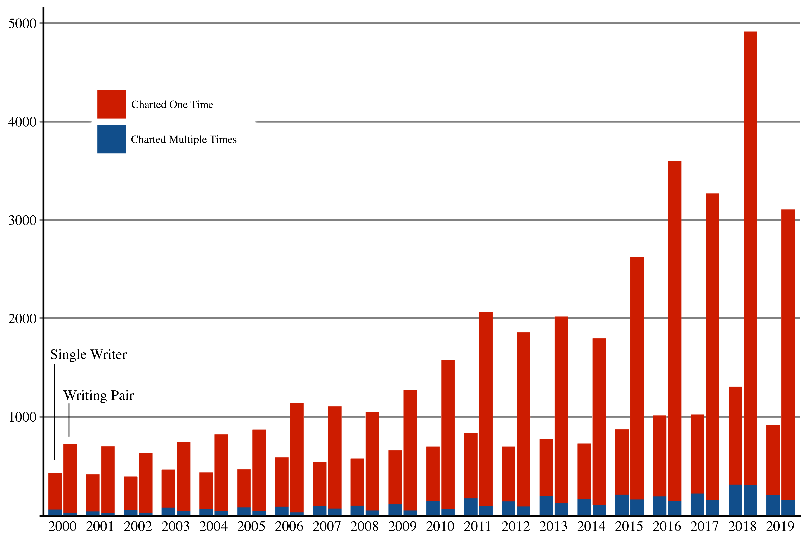

Billboard Hot 100 Pairs
Some of my favorite acts come in pairs, but prolific pairs are not the norm.
March 24, 2021
TLDR:
Using the Billboard Hot 100 chart data and a little R, I found that most pairs that chart only do it once, my theory is that most pairs are actually samples and one off collaborations.
21st Century Pairs
There is an art to getting a song to hit the Billboard Hot 100. Hard work, a catchy beat, good marketing all go into getting a song on the charts, but also the right people are important for charting. As the 21st century continues on we see that more and more artists are hitting the charts and more unique combinations of writing credits are appearing together. These credits mainly represent one off collaborations that do not blossom into chart smashing duos. This page will look at the duos that hit the charts. Using data provided by Billboard and R, I found all the pairs of artits that worked together in the last 20 years. There is plenty more to explore here but this page gives a quick overview of the key findings, pairs are growing but are typically not charting together more than once.
Computational Costs Interlude
Finding the pairs is a relatively simple sounding task that ends up having a computation time of \(O(n^2)\). This is pretty simple to show given the binomial coefficient which shows us the total combinations of \(k\) size out of \(n\) items: \[ {n \choose k} = \frac{n!}{k!(n-k)!}\]
With a \( k = 2 \) we get \[ O \left(\frac{n!}{2!(n-2)!} \right) = O \left(\frac{n(n-1)}{2} \right) \approx O(n^2)\] This speed became very apparent when calculating the unique pairs in each song for each year. With some songs including 23 writing credits, 20 years of Billboard charting songs took a few minutes to process on my unoptimized R code. I ended up with over 50,000 unique pairs and had I not limited myself to a small selection of songs then some more clever tricks would have been needed to churn through these pairings.
Charting The Pairs
The chart below shows the number of unique artists and artists pairs each year to hit the charts. The red represents artists and pairs that only made it once while the blue represents artists and pairs that charted more than once. Clearly more pairs are making it on the charts as we move further into the 21st century but proportionally the pairs that chart multiple times has grown much more slowly. Single artists are obviously going to be less represented than pairs, 4 people produce 6 pairs for instance, but thet striking feature is the growth in pairs far outpacing the growth of single artist. I have several theories for this.
Unique Writing Credits on the Billboard Hot 100 by Year
Pairs Rarely Chart More Than Once
I think pairs have become more representatives as electronic and hip-hop feature more samples and one of feature collaborations. Artists are often featured on a single song but not featured on the entire album. Likewise a sample is rarely used multiple times by an artist, and since samples can come from a large variety of musicians repeats arer often avoided. These samples and features come with writing credits this allows the correct attribution and also to ensure the right compensation for all the artists involved. These samples and collaborations can bring new life to old work or promote less known artists, and so long as they keep getting used in new and interesting ways I'm excited to see these pairs grow as time moves on.